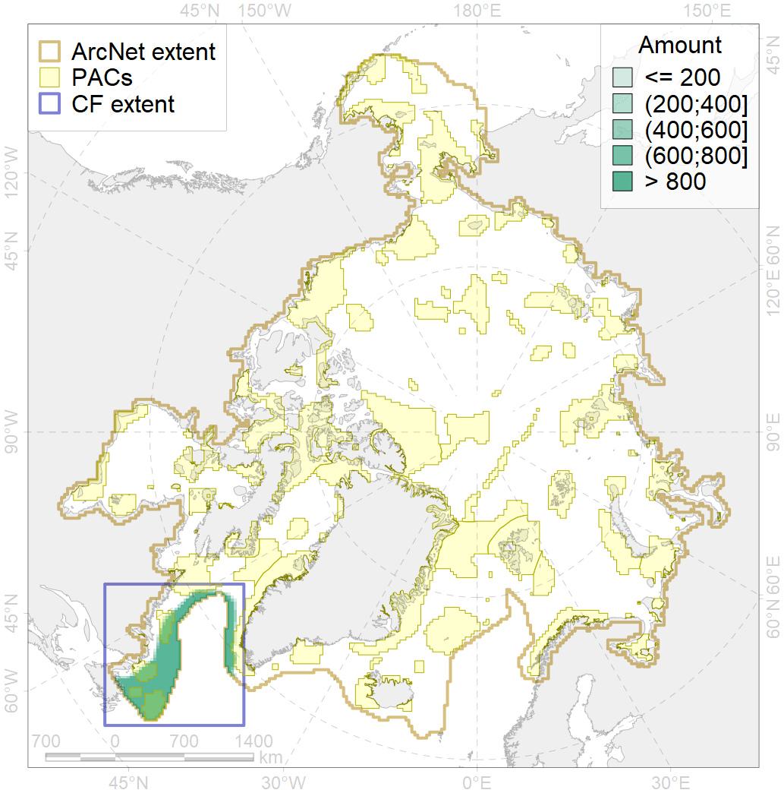
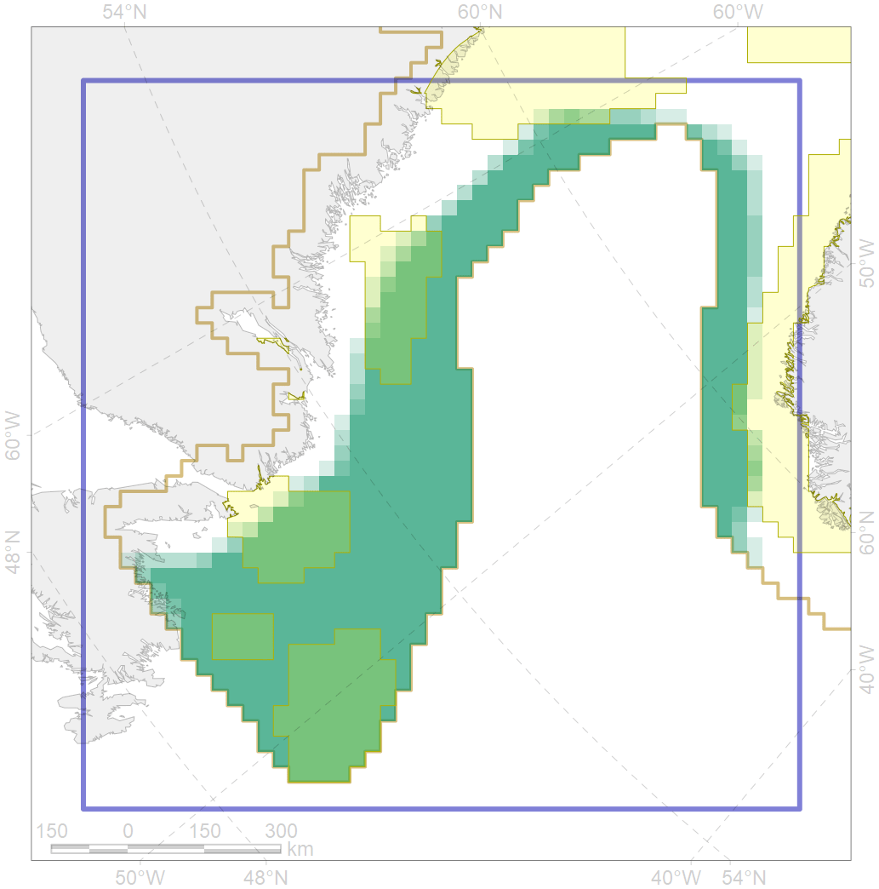

4080

| CF ID | 4080 |
| CF Name | Fish zoogeography, Deepsea Atlantic Region, North-Atlantic Abyssal Province (Scandian, Central-Arctic and Baffin Deep-sea Districts ) |
| Time Period | 2019 |
| Source(s) | Chernova, produced for this project |
| Seasonality | January-December |
| Depth Horizon | |
| Methodology | expert opinion based on summarised data of trawl surveys and multiple publications |
| Author Name | N. Chernova |
| Notes | |
| Conservation Target Set in the Scenario | 0.05310042 |
| Conservation Target Achieved in the Scenario | 0.299 (Scenario: 563.7%) |
| PAC ID | Proportion in the PAC | Contribution to ArcNet Target Achievement | PAC’s Contribution to the Achieved Target |
|---|---|---|---|
| 44 | 1.3% | 16.2% | 2.9% |
| 76 | 0.5% | 9.4% | 1.7% |
| 77 | 6.0% | 109.0% | 19.3% |
| 79 | 6.5% | 104.1% | 18.5% |
| 80 | 2.5% | 39.1% | 6.9% |
| 81 | 12.2% | 208.0% | 36.9% |
| inner | 29.0% | 485.9% | 86.2% |
| outer | 71.0% | 77.8% | 13.8% |